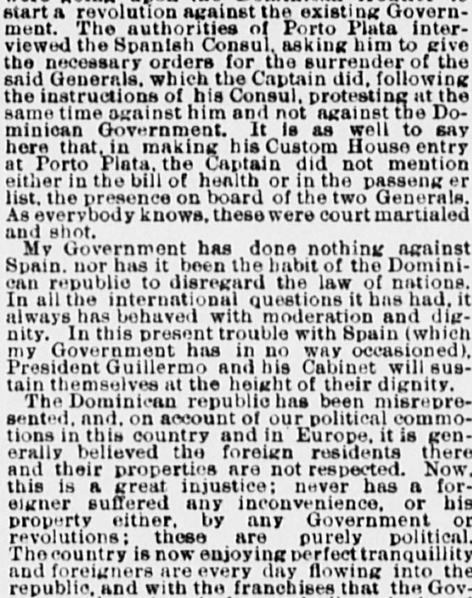

Article in transcriptionArtículo en transcripción
The Sun. New York [N.Y.], August 9, 1879. Page 2. Published by Benj. H. Day. A daily newspaper, 1833–1916.The Sun. New York [N.Y.], 9 de agosto de 1879. Página 2. Publicado por Benj. H. Day. Periódico diario, 1833–1916. View the originalVer el original

This article is being transcribed again from the original newspaper page. It is not available to read in the meantime; it will return as soon as the new transcription is ready.Este artículo se está transcribiendo de nuevo desde la página original del periódico. Mientras tanto no está disponible para su lectura; volverá en cuanto la nueva transcripción esté lista.
FULL TEXT:TEXTO COMPLETO:
The Sun August 9, 18799 de agosto de 1879
Original in English.Original en inglés.
A Letter from the Dominican Consul.Una carta del cónsul dominicano.
TO THE EDITOR OF THE SUN—Sir: For some time the press of this city has been giving reports respecting the trouble between Spain and San Domingo, and yesterday the Evening Telegram gave some private information received in this city, which sets forth that "should Spain bombard, as she threatens to do, the capital of San Domingo," the Dominican Government will issue letters of marque for vessels to prey on Spanish shipping.AL DIRECTOR DE THE SUN—Señor: Desde hace algún tiempo la prensa de esta ciudad ha venido publicando informes respecto al conflicto entre España y Santo Domingo, y ayer el Evening Telegram ofreció cierta información privada recibida en esta ciudad, la cual expone que «si España bombardea, como amenaza con hacer, la capital de Santo Domingo», el Gobierno dominicano expedirá patentes de corso para que las embarcaciones hostiguen a la marina mercante española.
I am not aware that Spain has made any direct threat to the Dominican Government, nor have I learned that any Spanish squadron is expected at San Domingo; but, regarding the letters of marque, the Dominican republic having no marine forces, its Constitution authorizes the Executive to issue letters of marque in case of war with any other nation.No tengo conocimiento de que España haya hecho amenaza directa alguna al Gobierno dominicano, ni he sabido que se espere escuadra española alguna en Santo Domingo; pero, en lo relativo a las patentes de corso, al carecer la República Dominicana de fuerzas navales, su Constitución autoriza al Ejecutivo a expedir patentes de corso en caso de guerra con cualquier otra nación.
I have not begun to buy arms and ammunition, as is reported; since the election and inauguration of Gen. Cesáres Guillermo as President, his Government has been regularly buying arms and ammunition merely to equip the army.No he comenzado a comprar armas ni municiones, según se informa; desde la elección e investidura del general Cesáreo Guillermo como Presidente, su Gobierno ha estado comprando armas y municiones de manera regular meramente para pertrechar al ejército.
The cause of the dispute between the two nations has been more or less misrepresented. The facts are simply these: About six months ago, on the arrival of the regular Spanish mail steamer at Porto Plata, correspondence was landed stating that there were on board two Dominican Generals, members of the Baez party, who, according to the correspondence, were going upon the Dominican frontier to start a revolution against the existing Government. The authorities of Porto Plata interviewed the Spanish Consul, asking him to give the necessary orders for the surrender of the said Generals, which the Captain did, following the instructions of his Consul, protesting at the same time against him and not against the Dominican Government. It is as well to say here that, in making his Custom House entry at Porto Plata, the Captain did not mention either in the bill of health or in the passenger list, the presence on board of the two Generals. As everybody knows, these were court martialed and shot.La causa de la disputa entre ambas naciones ha sido más o menos tergiversada. Los hechos son sencillamente estos: hace unos seis meses, a la llegada del vapor correo regular español a Puerto Plata, se desembarcó correspondencia que indicaba que a bordo viajaban dos generales dominicanos, miembros del partido de Báez, quienes, según la correspondencia, se dirigían a la frontera dominicana para iniciar una revolución contra el Gobierno existente. Las autoridades de Puerto Plata se entrevistaron con el cónsul español, pidiéndole que diera las órdenes necesarias para la entrega de dichos generales, lo cual hizo el capitán, siguiendo las instrucciones de su cónsul, protestando al mismo tiempo contra este y no contra el Gobierno dominicano. Conviene asimismo decir aquí que, al hacer su declaración de aduana en Puerto Plata, el capitán no mencionó, ni en la patente de sanidad ni en la lista de pasajeros, la presencia a bordo de los dos generales. Como todo el mundo sabe, estos fueron sometidos a consejo de guerra y fusilados.
My Government has done nothing against Spain, nor has it been the habit of the Dominican republic to disregard the law of nations. In all the international questions it has had, it always has behaved with moderation and dignity. In this present trouble with Spain (which my Government has in no way occasioned), President Guillermo and his Cabinet will sustain themselves at the height of their dignity.Mi Gobierno no ha hecho nada contra España, ni ha sido costumbre de la República Dominicana desconocer el derecho de gentes. En todas las cuestiones internacionales que ha tenido, siempre se ha conducido con moderación y dignidad. En este conflicto actual con España (el cual mi Gobierno de ningún modo ha provocado), el presidente Guillermo y su Gabinete se mantendrán a la altura de su dignidad.
The Dominican republic has been misrepresented, and, on account of our political commotions in this country and in Europe, it is generally believed the foreign residents there and their properties are not respected. Now, this is a great injustice; never has a foreigner suffered any inconvenience, or his property either, by any Government or revolutions; these are purely political. The country is now enjoying perfect tranquillity and foreigners are every day flowing into the republic, and with the franchises that the Government has given in favor of all agricultural establishments, large sugar, coffee and other plantations are rising up. The Government has asked of Congress authority to propose to the United States a treaty of reciprocity, and the Dominican press has been for some time, and is yet, discussing and elucidating that question. The Dominican republic has no doubt entered into an era of happiness and peace.La República Dominicana ha sido objeto de tergiversaciones y, debido a nuestras conmociones políticas, tanto en este país como en Europa se cree generalmente que los residentes extranjeros allí y sus propiedades no son respetados. Ahora bien, esto constituye una gran injusticia; jamás un extranjero ha sufrido molestia alguna, ni tampoco su propiedad, por parte de ningún Gobierno ni de revoluciones; estas son de carácter puramente político. El país disfruta ahora de perfecta tranquilidad y los extranjeros llegan diariamente a la república, y con las exenciones que el Gobierno ha concedido en favor de todos los establecimientos agrícolas, están surgiendo grandes plantaciones de azúcar, café y otros cultivos. El Gobierno ha solicitado al Congreso autorización para proponer a los Estados Unidos un tratado de reciprocidad, y la prensa dominicana ha estado desde hace algún tiempo, y aún sigue haciéndolo, debatiendo y dilucidando esa cuestión. No cabe duda de que la República Dominicana ha entrado en una era de felicidad y paz.
I hope you will have the kindness to insert this letter in your valuable paper and obligeEspero que tenga usted la amabilidad de insertar esta carta en su valioso periódico y favorezca así a
Your obedient servant, H. BILLINI,Su atento y seguro servidor, H. BILLINI,
NEW YORK, Aug. 8. Dominican Consul.NUEVA YORK, 8 de agosto. Cónsul dominicano.